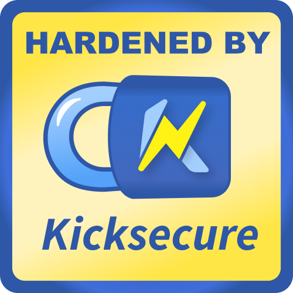

We believe security software like Whonix needs to remain Open Source and independent. Would you help sustain and grow the project? Learn more about our 14 year success story and maybe DONATE!
Security RoadmapAdvanced DocumentationWhonix-Gateway FirewallPrevious page: Security RoadmapIndex page: Advanced DocumentationNext page: Whonix-Gateway FirewallOther Desktop Environments

How to use Other Desktop Environments other than LXQt with Whonix. Current situation. Risks. Future. (Gnome, KDE, Xfce, MATE, ...)
Current Situation
As of version 18, the Downloadable Whonix versions are available with
either:
- A) LXQt: desktop environment (graphical user interface (GUI); OR
- B) command line interface (CLI): text terminal only (no desktop environment).
However, other desktop environments like Gnome, KDE, Xfce, LXDE and so on can be manually installed.
Risks

Redirection to Kicksecure Documentation
- Introduction: Whonix Documentation Introduction, User Expectations, Footnotes and References, User Expectations - What Documentation Is and What It Is Not
- Whonix is based on Kicksecure™: Whonix is built on top of Kicksecure. This means it uses many of the same security tools, design concepts, and configurations.
- Kicksecure is based on Debian: Kicksecure is developed using Debian as its base. Debian is a widely used, stable, and free Linux operating system.
- Inheritance: As a result, Whonix is also based on Debian.
- Debian is GNU/Linux-based: Debian is built using the GNU/Linux operating system. GNU provides essential tools and Linux is the system's kernel (core).
- Shared documentation benefits: Since each system is based on the one below it, a lot of documentation and guides are shared. This reduces the need to duplicate information.
- Inherited documentation: Most instructions and explanations are inherited from Kicksecure or Debian, unless otherwise specified.
- Shared principles: The systems share similar security goals and setup instructions. In most cases, users can follow Kicksecure documentation when using Whonix.
- Keep using Whonix: This does not mean users should switch to Kicksecure. This page only points to related, helpful information.
- Where to apply the instructions: Follow the instructions inside Whonix unless specifically stated otherwise.
- Wiki editors notice: This information is pulled from a reusable wiki template: upstream_wiki. (See which pages use this.)
- Comparison: Whonix versus Kicksecure
- Documentation compatibility: Because Whonix is based on Kicksecure, you can often follow Kicksecure's instructions as long as you apply them in the right place.
- Summary: Whonix is built on top of Kicksecure, which itself is based on Debian. Debian is a GNU/Linux operating system. This layered design means Whonix inherits many features, tools, and documentation from both Kicksecure and Debian.
- Click here: Visit the related page in the Kicksecure wiki for full documentation and background:
 Other Desktop Environments
Other Desktop Environments
- Note: Re-interpretation...
Apply the instructions inside Whonix, not inside Kicksecure.
Kicksecure: Perform these steps inside Kicksecure.
Instead, apply the steps inside Whonix-Workstation.
Kicksecure for Qubes: Perform these steps inside Qubes
kicksecure-18Template.
Instead, use the whonix-workstation-18 Template for
these steps.
Future
Since Whonix is an Open Source / Freedom Software project, Whonix developers are hoping that other developers join the project and maintain other desktop environments. That someone could be you?
See Also
Footnotes
Categories: Documentation